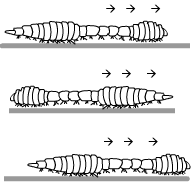

Movement and Defense Across the Animal Kingdom
By Julia Guo, Eton Victor, Brian Giordano, Daniel Santoro
Resch A4
Divergent and convergent evolution has allowed different animals to move around and defend themselves in many ways. Let's take a look.
Squid / Phylum MolluscaMovement
The squid mainly uses its siphon, tentacles, and head fins to move. Its siphon propels the squid through the water by pressing water from the pallial cavity through the siphon nozzle. Many other ocean mollusks, such as the octopus, move similarly; land mollusks such as snails, drag themselves around slowly using a foot. Other mollusks are sedentary.
Defense
The squid's main defense is to jet our a cloud of ink to confuse predators and easily escape. They also often wrap their arms around predators in an effort to prevent themselves from getting eaten. Physiology-wise, they have a robust beak made out of chitin for defense, bilateral symmetry for faster movement and easier escaping, and chromatophores in their skin for camouflage (only some squids have this). Interestingly, squids have muscles in their mantle and tentacles (muscular hydrostat) similar to human tongue.
Pig / Phylum Chordata, Class MammaliaMovement
- Muscular system similar to most other mammals
- Striated skeletal muscles attach to an underlying skeleton and provide a framework for movement
- Smooth involuntary muscles control digestion and other internal processes
- Cardiac involuntary muscle, which is only found in the heart and controls heartbeat and function
- Bilateral symmetry
Defense
- Male pigs grow tusks used for offense
- Don't have particularly good eyesight, so they use their sense of smell and hearing to detect possible threats.
- Uses subcutaneous fat for energy and insulation
Frog / Phylum Chordata, Class AmphibiaMovement
Bilateral symmetry
- Similar to pigs, frogs have a skeleton used as an underlying framework for striated muscles.
- Unlike the pig, which uses lungs controlled by a diaphragm, frogs use a method of breathing known as buccal pumping (breathing through the cheeks).
- The flow of oxygen is very important for frogs and pigs because they have muscles that require fresh oxygen for hemoglobin and myoglobin
- Frogs have very developed hind legs used for jumping, catching prey, and escaping predators. When compared to the pig, the greater amount of muscular development in the frog is quite startling
- Can walk, run, swim, dig, jump; not all frogs can do all of these motions, however.
Defense
- Has fat bodies in the abdomen that store energy
- Uses camouflage
- Runs/leaps away easily
- Produces toxins from glands in its skin
- Plays dead
- Swells up to give the appearance of additional mass
- Bright colors to indicate danger to predators
Crayfish / Phylum ArthropodaMovement
Crayfish and other arthropods use their muscles for extension and flexion, similar to chordates. They can walk on land or on seafloors using legs. Crayfish have small appendages known as swimmerets on the tail region for swimming.
Defense
Many arthropods have spikes protruding from the forelimbs as a form of physical defense. The crayfish can also use its tail as a rudder to propel itself backwards in the event of a predator approaching. Its forelimbs end in claws that can be used for hunting and defense; this is a trait that is shared with other arthropods such as crabs, and is analogous to the claws of some predatory chordates such as bears. Upon being threatened, the crayfish raises its claws in the air and engages in a self defense stance, in which it menacingly flashes its claws. As a general defense mechanism, arthropods have hard exoskeletons made of chitin, a structural polysaccharide.
Grasshopper / Phylum Arthropoda (cont.)Movement
Unlike ocean-based arthropods such as the crayfish, land-based arthropods like the grasshopper often have wings capable of flight. The grasshopper's primary method of locomotion is jumping using powerful hind legs. This jumping has a variety of functions, such as allowing them to escape from predators, propel themselves in the air in preparation for flight, or simply serve for general locomotion. The hind legs of the grasshopper are highly specialized and comparable to the frog's in the sense that they are highly enlarged for the particular purpose of jumping. These legs are powered by a series of developed muscles.
Defense
The coloring of grasshoppers and other insects allow them to camouflage with grassy environments. Their hard exoskeletons serve as protection from minor dangers. Typically grasshoppers and other insects do not confront enemies, and simply escape when faced with peril. Grasshoppers in particular have small chitin spikes on their rear legs to make them more difficult to eat.
Earthworm / Phylum Annelida

Movement
Earthworms move using their flexible, segmented body, which is propelled by a series of muscles (known as the hydrostatic skeleton). They have two layers of muscles, circular and longitudinal, which run around their circumference and contract alternatively to move. Their skin has small bristles (setae), which help it grip to the soil and move more easily. These adaptations are true for most other annelids. Additionally, some annelids have appendages that resemble legs or tentacles, and others are able to use their powerful muscles to swim through water.
Defense
Firstly, earthworms' skin or ectoderm serves as a protective barrier from their surroundings. They also use receptor cells to detect possible danger; some other annelids use their eyes if they are well-developed enough. Annelids can release odor upon capture to seem less appealing to predators. They can also regenerate upon being cut into two; this is their main survival strategy since the chemicals they release may be ineffective. To avoid predators in the first place, they can burrow deep into the soil.
Roundworm / Phylum NematodaMovement
Nematodes move using a combination of longitudinal muscles and internal pressure. Since they have muscles that move in only one direction, they cannot crawl, only thrash.
Defense
Because they are mostly parasitic, nematodes do not necessarily need physical defenses from other animals. Instead, they have a variety of chemical defenses that prevent the host's immune system from killing them. They also have chemical defenses for non immune based microbial attacks.
Sponges / Phylum PoriferaSponges are some of the simplest animals in existence. It is believed that they were actually one of the first animals on earth, and were formed when cells clumped together and created a language to communicate with each other. They were also one of the first sexual reproductive animals, made possible by choanocytes, or special cells. Many different species of sponges exist, and they can thrive in many different climates.
Movement
Sponges have no muscles and are largely sedentary, though a few species are able to move extremely slowly as a result of pinacocytes' amoeba-like movement. Movement inside the sponge is made possible by choanocytes, or sponges' “hearts.” In these specialized cells, whip-like tails power the pumping of molecules throughout the labyrinth of canals within the sponge.
Defense
Sponges do not have nerves or a nervous system for defense. Their survival, however, is aided by unique cell communication - even when separated, sponge cells can find their way back to each other and start growing new sponges. To support the body, sponges are held together by soft collagen. Additionally, structures known as spicules provide structural support, and when shedded, form a dense carpet around the sponge that deters predators. Finally, sponges do not have a developed immune system, but are able to reject foreign material and release toxins to remove it. Some sponges also release toxins to deter predators.
Phylum Cnidaria- First animals to have muscles and nerves to produce behavior
- Believed to evolved from sponge (One of the first complex animals)
- Coral reefs occur when anemones and other cnidarians work together to grow and don’t fight each other for space
Movement- Sensitive tentacles that reach out and receive
- Two sets of muscles
- Bend in any direction
- Depend on nerves to know which way to bend (Best pose to snag food based on current of water)
- Can free itself from rock start to swim (looks like flopping)
- Medusa has a pump like motion
- Jelly squeeze the upper portion of body pushing water and propelling them with a jet type force (Jet of water not like the force of a jet)
Defense- Sensitive tentacle
- Nematocyst- tiny capsules filled with toxins that are pumped out and into prey
- Must be touched before toxin is discharged
- Some toxins can be fatal to even humans and can used against own kind
- Inflate sacs for combat
- Many weapons
- Must touch enemy
- Used to hold their ground
- These battles can last for hours or days
- Winner stays, loser eventually moves away
- Can swim away from predator if need be
- Detach tentacles as decoys of potential attackers
Starfish / Phylum Echinodermata


tube feet ^
Starfish have a five-part symmetry common to all echinoderms.
Movement
The body of the starfish is made of a skeleton of thousands of tiny, bony plates. They are stitched together by equally as small muscles. This makes the starfish very flexible. It also has thousands of tiny tube feet, powered by water pressure. Water goes in through the sieve plate and travels down radial canals, and is then stored in muscular pouches. So, tube feet function as both appendages for movement, and the entrance to the water vascular system.
Defense
Starfish and other echinoderms have rough skin, which makes them unpleasant for predators to eat. They can also produce unpleasant substances, such as mucus and toxins, which deter predation. Finally, starfish can regenerate, like earthworms, when cut apart; this greatly increases its survival. Many other echinoderms can do the same. This may be evidence of relatively recent common ancestry between the phyla.
Sea Cucumber / Phylum Echinodermata cont.Sea cucumbers have a variation on the token five part symmetry of echinoderms.
MovementLike starfish and other echinoderms, sea cucumbers also have hydraulic tube feet. Though most echinoderms have these, sea urchins have spines and use those to move instead. Sea cucumbers also have muscles for some movement of the body. They are generally sluggish animals, though.
DefenseSea cucumbers and other echinoderms are made up of calcite and calcium carbonate, which renders them indigestible by many organisms. Behavioral mechanisms of defense specific to the sea cucumber include vomiting internal tubules and/or its digestive system onto predators. Like other echinoderms, it can also produces clouds of toxins in water around the body. The release of toxins that is so common amongst animals is evidence of divergent evolution.